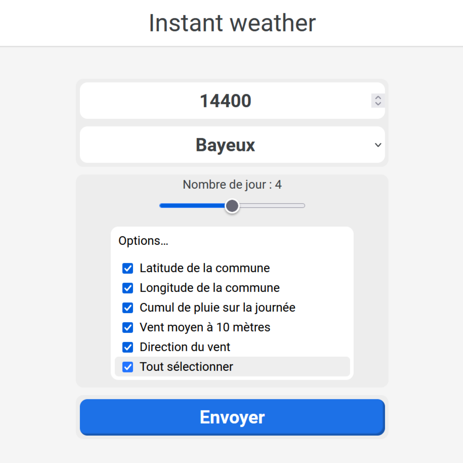
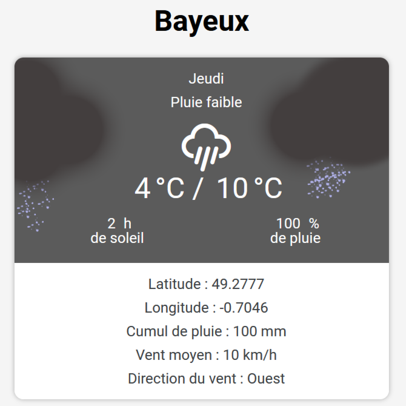

Instant Weather
Date : 2023
Présentation :
C'est une application web pour connaître la météo des 7 prochains jours dans une ville sélectionnée. Je l'ai développée au sein d'une équipe de 4 personnes et j'ai utilisé des API.
Liens vers le projet
Cela a permis de m'améliorer
- Utilisation d'API pour le CSS : Pouvoir utiliser des polices non fournies par certains navigateurs ;
- Utilisation d'API pour les villes et la météo : Pouvoir générer des informations dynamiquement non connues à l'avance ;
- Travailler dans une équipe : Gestion d'un projet au sein d'une équipe de 4 personnes ;
- Gérer les entrées utilisateurs : Vérifier la cohérence des entrées utilisateurs et déclencher les actions associées.
Aperçu

